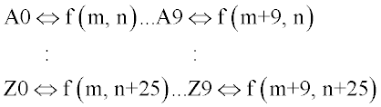

Prints or transfers the current distribution data to/from variables.
Syntax
SECTION [ m m' [ n n' ] ] [ GET ]
PUT
| Option | Description |
|---|---|
| m m' n n' | range of pixels to be printed or transferred |
| GET | flag to transfer distribution data into variables |
| PUT | flag to put variables into distribution data |
Remarks
Print, GET into registers or PUT from registers the section of data:
f(i,j): i=m to m', j=n to n'
